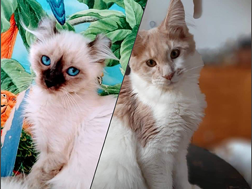

 MAMY KOCIĘTA DOWIEDZ SIE WIECEJ
SOWILO PL DOMOWA HODOWLA MAINE COON I CURL AMERICAN
Czyż trzeba tłumaczyć dlaczego posiadam koty? ... Hmmm, tylko one potrafią cicho mruczeć, siedzieć tak długo w milczeniu w jednym miejscu, a kiedy się już ruszą zachwycają prostym pięknem naturalnych ruchów. Kocham w kotach ich spokój, równowage, ich zadumę i oddanie. A jeśli kot- to musi być MAINE COON. Zakochałam się w tych kotach od pierwszego wejrzenia i miłość ta stale rośnie. Nie wyobrażam sobie życia bez tych wspaniałych istot i cieszę się, że dane mi jest obcowanie z nimi na codzień. Dobra socjalizacja kociąt to kolejny aspekt który wyróznia naszą hodowlę.Nasze kociaki są bardzo kontaktowe,ufne i odważne a wszystko to dzięki czasu jaki poświęcamy w ich wychowanie.Poświęciłam wiele czasu na zbadanie psychiki kota i wiem co zrobić by te istoty czuły się dobrze i naturalnie.I takie zachowanie można zauważyć u nas w domu.Koty są przyjazne,zadowolone i chętnie nawiązują kontakt z człowiekiem.Kocięta szybko adaptują się w nowych domach dzięki dobrej socjalizacji. Największą radością dla nas jest zadowolenie nowych właścicieli naszych kociąt i to,że znalazły one dobre ,pełne miłości domy.
Nasze serca podbiły również koty rasy Curl American .... kotki mini przy wielgachnych psich Maine coonach ale o równie wielgachnych serduszkach i oddaniu swojemu człowiekowi .Curle amerykańskie nie bez powodu nazywane są „kocimi labradorami”. 😻 Uwielbiają zabawę i kontakt z człowiekiem, a także są niezwykle łagodne. 😊 Te pieszczochy doskonale nadają się dla rodzin z dziećmi – z pewnością zaprzyjaźnią się z każdym z domowników! 👨👩👧👦 Nasze curle są niezwykłe – charakteryzują się ubarwieniem typu point i niebieskimi oczami nawet w wieku dorosłym!